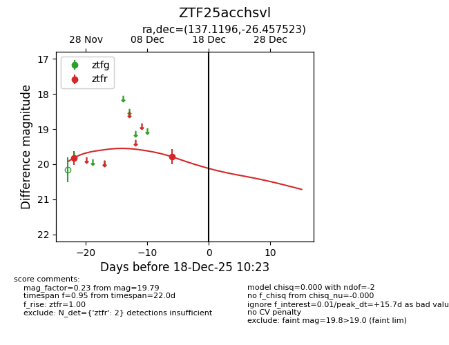
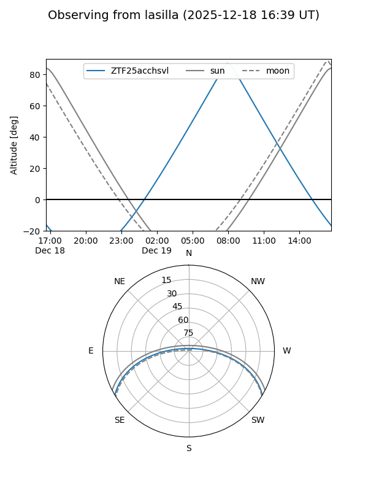
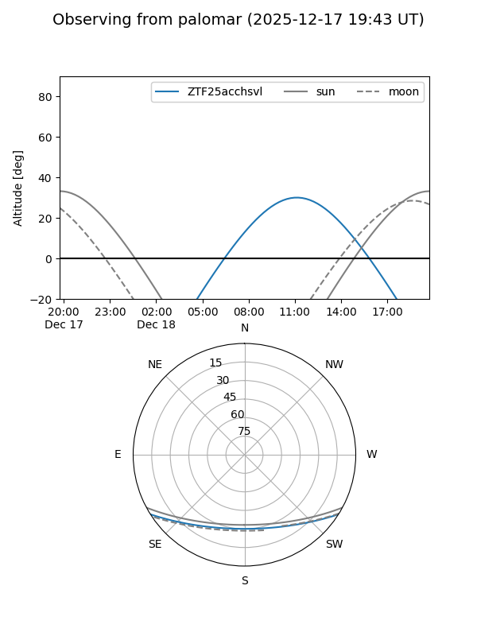

ZTF25acchsvl
Target ZTF25acchsvl at 2025-12-18 11:18
Aliases and brokers:
FINK: fink-portal.org/ZTF25acchsvl
Lasair: lasair-ztf.lsst.ac.uk/objects/ZTF25acchsvl
ALeRCE: alerce.online/object/ZTF25acchsvl
alt names
ZTF25acchsvl (ztf,fink_ztf)
Coordinates:
equatorial (ra, dec) = 137.1196,-26.45752
equatorial (HMS+DMS) = 09:08:28.70,-26:27:27.08
galactic (l, b) = (253.1790,+14.20479)
Photometry
last ztfr=19.79
2 ztfr detections
Lightcurve

Visibility


Additional plots